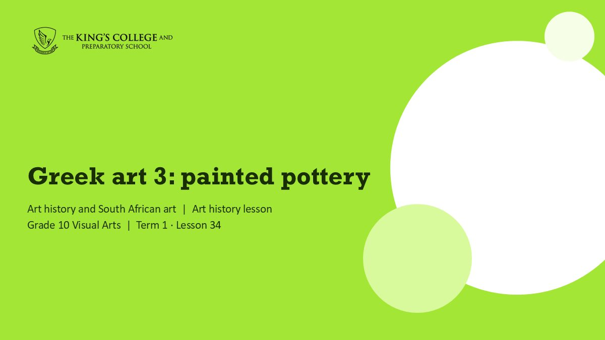

Term 1 · Lesson 34 · Art history lesson
Greek art 3: painted pottery
Start here
Today I will
- Explain the black-figure and red-figure techniques
- Name common vase shapes and their functions
- Compare a black-figure and a red-figure vase
Think first
Almost all Greek wall paintings have been lost, but thousands of painted pots survive. Why do you think pots lasted when walls did not?
Words to know
- Black-figure
- A technique in which figures are painted in black slip on the red clay and details are scratched in.
- Red-figure
- A technique in which the background is painted black and the figures are left in the red clay.
- Amphora
- A tall jar with two handles, used to store and carry wine, oil or grain.
- Narrative
- Telling a story in images, often from myths, legends or daily life.
- Slip
- Liquid clay used to paint on pottery, which turns black or stays red in the firing.
Slides

Notes
Black-figure and red-figure vases: technique, shape, function and narrative.
Two techniques
| Black-figure | Red-figure (from c. 530 BCE) |
|---|---|
| Figures painted in black slip on the red clay | Background painted black; figures left in the red clay |
| Details scratched (incised) through the black with a sharp tool | Details painted on with a fine brush in lines of different thickness |
| Bold, flat silhouettes with crisp patterns | More flowing lines, so muscles, faces and drapery look more natural |
| Exekias, Achilles and Ajax playing a board game (c. 540–530 BCE) | Red-figure became the main technique in Athens soon afterwards |
Shape, function and narrative
- Amphora: Two-handled storage jar for wine or oil. Large, curved sides give room for a scene.
- Krater: A wide bowl for mixing wine with water at gatherings.
- Kylix: A shallow drinking cup; the picture inside appears as the drinker empties the cup.
- Hydria: A water jar with three handles: two for lifting and one for pouring.
- Narrative: Scenes show gods, heroes such as Achilles and everyday life, fitted to the curved shape of the pot.
Remember
Black-figure scratches the detail; red-figure paints it.
Practical
You need: History booklet, visual journal
Compare a black-figure and a red-figure vase
- Sketch the outline of Exekias's amphora and the red-figure vase in your VJ and label each shape.
- Analyse the Exekias amphora with the FET formula for line and balance.
- Hint: look at the spears, the bent backs of the two heroes and the board game between them.
- Write two sentences comparing the techniques of the two vases.
- Write one sentence on the narrative: what story is being told, and how do you know?
Test yourself
- Explain the difference between black-figure and red-figure painting.
- What was an amphora used for?
- Give one reason why red-figure painting could show bodies more naturally.
Show answers
1. In black-figure the figures are black on a red background with scratched details; in red-figure the background is black and the figures stay red. 2. Storing and carrying wine, oil or grain. 3. Details could be painted with a brush instead of scratched, so lines could be finer, flowing and of different thickness.
Finished early?
Design for a curve
Fit a story onto the shape of a Greek pot.
- Draw the outline of an amphora in your VJ.
- Inside the body of the pot, design a simple everyday scene, such as two friends playing a game.
- Draw the figures as solid black-figure silhouettes and leave thin white lines for the details, like scratched lines.
- Write one sentence on how you fitted the scene to the curve of the pot.